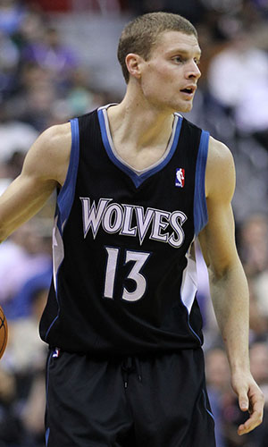

|  |
Матчи |
47 |
|
Передачи (всего/среднее) |
96 |
2 |
| В основе |
|
|
Подборы в защите (всего/среднее) |
60 |
1.3 |
| Время (всего/среднее) |
683:41 |
14:33 |
Подборы в атаке (всего/среднее) |
8 |
0.2 |
| Очки (всего/среднее) |
188 |
4 |
Подборы (всего/среднее) |
68 |
1.4 |
| 2-очковые броски (всего/среднее) |
55/113 |
1.2/2.4 |
Перехваты (всего/среднее) |
20 |
0.4 |
| 2-очковые броски (% реализации) |
48.7% |
|
Потери (всего/среднее) |
38 |
0.8 |
| 3-очковые броски (всего/среднее) |
20/63 |
0.4/1.3 |
Блокшоты (всего/среднее) |
4 |
0.1 |
| 3-очковые броски (% реализации) |
31.7% |
|
Блокшоты соперника (всего/среднее) |
3 |
0.1 |
| Штрафные броски (всего/среднее) |
18/27 |
0.4/0.4 |
Фолы (всего/среднее) |
66 |
1.4 |
| Люк Робин Риднур |
Штрафные броски (% реализации) |
85.7% |
|
Коэффициент полезности (всего/среднее) |
165 |
3.5 |